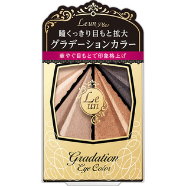

返回列表
产品名称：ルアン プリュス グラデーションアイカラー 02 カッパ―ブラウン

伊勢半 ルアン プリュス グラデーションアイカラー 02 カッパ―ブラウン ３．４ｇ
メーカー 伊勢半
JANコード 4901433876902
商品の特徴
瞳くっきり目もと拡大
華やぐ目もとで印象格上げ
- 成分・分量
- ＜成分＞
タルク、マイカ、ジフェニルシロキシフェニルトリメチコン、ダイマージリノール酸ダイマージリノレイル、合成フルオロフロゴパイト、イソノナン酸イソノニル、ワセリン、トリエチルヘキサノイン、ステアリン酸亜鉛、テトラ（ヒドロキシステアリン酸／イソステアリン酸）ジペンタエリスリチル、シリカ、カミツレ花／葉エキス、ジメチコン、（PEG-15／ラウリルジメチコン）クロスポリマー、プロピルパラベン、トリ（カプリル酸／カプリン酸）グリセリル、トコフェロール、ハイドロゲンジメチコン、酸化鉄、酸化チタン、アルミナ、酸化スズ、グンジョウ
- 用法及び用量
- ＜使用方法＞
1、上まぶた全体と、下まぶたの目頭から中央に向けて伸ばします。
2、目頭からアイホール全体に広めにぼかします。
3、目のキワからアイホールへぼかすように広げます。
4、上まぶたのキワと、下まぶたの目尻から中央に向かって3分の1にラインを描きます。